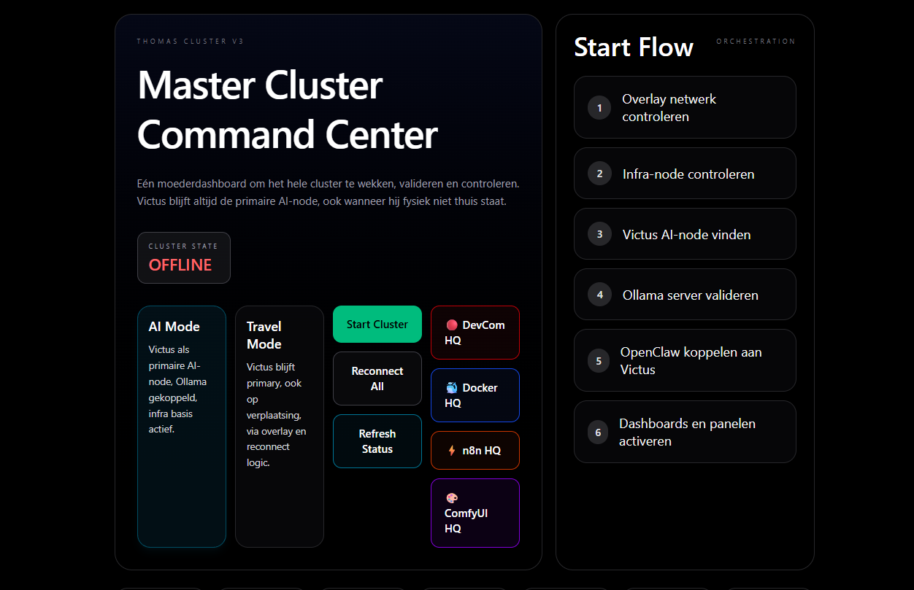

INFRASTRUCTURE · DOCKER · n8n · OLLAMA
Thomas Cluster Dashboard
Une plateforme de contrôle auto-hébergée pour mon cluster local d’IA et d’automatisation : un master command center avec modules Docker, n8n, Ollama/OpenClaw et ComfyUI sous un même toit.
RÉSULTAT
4 systèmes — Docker, n8n, Ollama et ComfyUI — sous un seul command center avec logique de démarrage et de reconnexion.

01 LE PROBLÈME
Un labo d’IA local qui grandit devient vite une collection de services séparés : conteneurs, automatisations, serveurs de modèles et workflows GPU, chacun dans sa propre fenêtre. Tout lancer et contrôler séparément prend du temps et finit mal.
02 CE QUE ÇA FAIT
- Master command center
- Un dashboard central pour réveiller, valider et contrôler tout le cluster — avec un start-flow qui vérifie étape par étape réseau, infra-node, AI-node, Ollama et OpenClaw.
- AI-mode & travel-mode
- Le node IA principal reste accessible, même quand la machine n’est physiquement pas à la maison, via un réseau overlay et une logique de reconnexion.
- Module Docker
- Surveiller et gérer les conteneurs depuis le dashboard plutôt que dans des terminaux séparés.
- Automatisation n8n
- Le moteur d’automatisation comme module à part entière, à côté du reste du cluster.
- Modèles locaux
- Ollama et OpenClaw reliés : lancer des modèles et les connecter au reste de la stack.
- ComfyUI / workflows GPU
- Une vue dédiée à la génération d’images et au travail GPU, comme module du même ensemble.
03 CE QUE J’EN AI APPRIS
Les modules — Docker, n8n, Ollama, ComfyUI — ne sont pas des projets séparés mais des fenêtres sur un seul système. La vraie valeur était dans le start-flow et la logique de reconnexion qui font de services épars un cluster fiable.
INTÉRESSÉ ?
Parlons ensemble.
Dites-moi ce que vous en pensez — ou ce que vous aimeriez en faire.